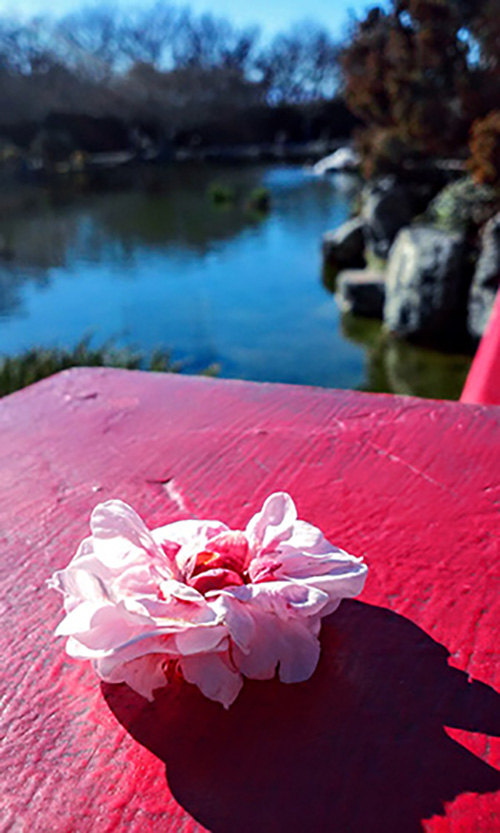
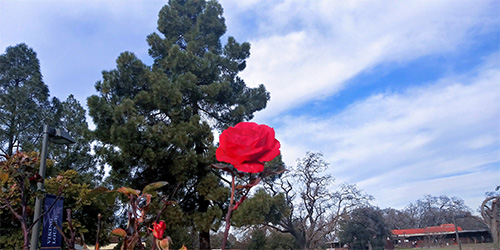
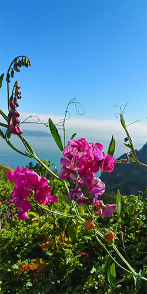
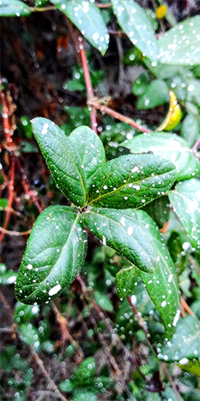
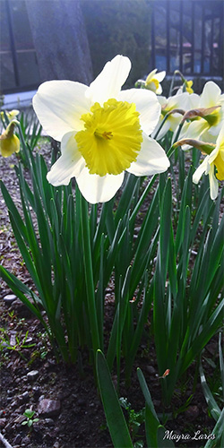
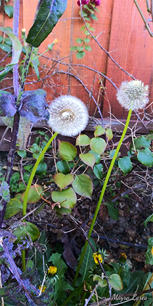
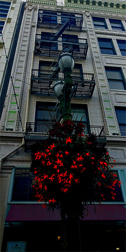
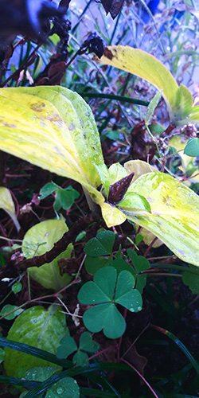
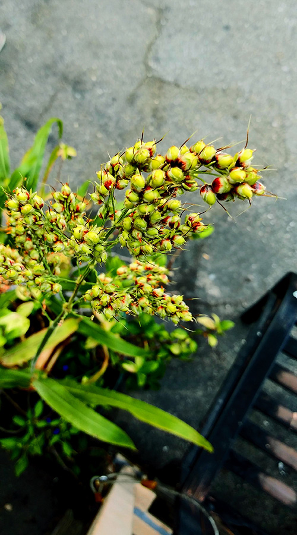
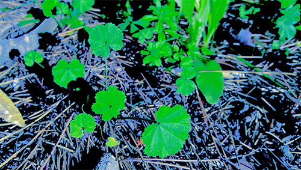

Plants & Flowers
Pictures of flowers are just amazing. For me, it's not about the quality of
the picture, but the flower. There are so many kinds of different colors and it's
nice to see how each plant shows its personality through their colors and shapes.









